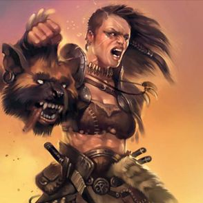

Les barbares
Quelques idées pour sortir des sentiers battus concernant la classe de barbare.
Familles, clans et tribus
Les familles, les clans et les tribus sont des structures communes dans la plupart des cultures humanoïdes comme les orcs, les gobelinoïdes ou les kobolds par exemple. Les patriarches protègent les membres et, en retour, attendent de ces derniers qu'ils les vengent et fassent payer toute injustice perpétrée à leur égard. Devant l'absence de lois, la protection de la famille et la peur de la vengeance fournit aux sociétés tribales une raison de se tenir tranquille.
La famille est l'unité sociale de base des cultures tribales. Plusieurs familles qui partagent un ancêtre commun forment un clan, et la tribu est un groupe de plusieurs clans. Au niveau supérieur, une horde ou un royaume peut être formé par l'allégeance de plusieurs tribus à une autre tribu plus puissante, mais ces unités politiques sont loin d'être stables.
Les chefs tribaux occupent donc le plus haut rang dans les sociétés sauvages, suivis par les patriarches des clans et les chefs de familles. Les autres membres éminents d'une tribu sont les artisans, les guérisseurs, les prêtres, les guerriers d'élites, et tout autre membre doué dans son domaine. Mais les simples membres de la tribu sont ceux qui forment la plus grande caste. Ils ne possèdent pas beaucoup de droits, mais en ont tout de même plus que les esclaves. Car ces derniers, bien que rares dans les sociétés barbares, existent bien. Quoi qu'il en soit, tous, qu'ils possèdent ou non une terre, se doivent de prêter allégeance au chef.
Les sociétés barbares
Peu de sociétés barbares sont identiques, même si la plupart d'entre elles partagent nombre de valeurs communes et la même structure sociale. Ceci s'explique par le fait que le climat et le terrain influent significativement sur ces sociétés sauvages, tout comme pour les sociétés civilisées d'ailleurs. Les installations, la nourriture et le niveau de vie ont également un fort impact sur leur manière de s'adapter à leur environnement naturel. Les exemples suivants détaillent les types de sociétés barbares les plus communes.
Nomades. Les barbares nomades habitent souvent de grandes plaines ou des steppes qui leur permettent de maintenir leurs grands troupeaux de bétail, chevaux, moutons, et autres animaux de troupeaux. Ne dépendant pas des moissons, ils se déplacent facilement de régions en régions, au rythme des saisons et des besoins de leurs animaux. Les nomades habitent dans des chariots, des tentes, ou tout autre abri facilement transportable, mais certains d'entre eux maintiennent toutefois de solides bâtiments ou des forts pour leurs quartiers d'hiver. Les tribus nomades produisent souvent d'excellents cavaliers, favorisés en cela par les nombreux voyages qu'ils effectuent sur de grandes distances.
Sédentaires. L'agriculture forme la base des ressources alimentaires des barbares sédentaires, bien que ceux-ci chassent également. Les barbares sédentaires atteignent même souvent un niveau de vie relativement élevé s'ils demeurent sur des terres fertiles et défrichent suffisamment d'espace pour les champs et les pâtures des animaux. Le fait de posséder des surplus de nourriture est important car il permet alors aux "spécialistes" tels que les guerriers, les prêtres et les artisans de consacrer leurs efforts à leurs activités professionnelles, plutôt que d'aider à nourrir la tribu.
Semi-nomades. Les denses forêts ou les montagnes ont tendance à limiter le développement de l'agriculture des sociétés tribales qui y résident. La chasse devient alors la première source de nourriture lorsque le manque d'espace limite les capacités d'une tribu à augmenter la taille de son bétail ou de ses récoltes. Les sauvages qui habitent sur ces terrains inhospitaliers ont donc souvent une vie de semi-nomade, migrant vers d'anciennes installations abandonnées lorsque les terres où ils résident sont épuisées. Ces tribus pratiquent énormément le troc pour acquérir les fournitures qu'elles ne peuvent produire.
La guerre
L'intérêt pour le combat est l'attribut le plus notoire de beaucoup de barbares. Pour nombre de tribus, la guerre permet de mettre en avant l'honneur, le courage et la capacité de ceux qui la mènent. Les guerriers des tribus voient le combat comme un sport et la meilleure manière de prouver à tous ce qu'ils valent. Les accrochages et les petits raids servent de tests. La mort est glorieuse si on y a fait face courageusement. Beaucoup de barbares, même ceux d'alignement bon, attaquent les territoires de leurs ennemis. Et même si seuls les mauvais commettent des actes discutables, voire des atrocités, les bons ne voient rien de mal à recueillir le butin d'un ennemi vaincu. Entre ces extrêmes, les neutres suivent les coutumes et les lois non-dites, en profitant de toutes les occasions, sans aucun scrupule moral.
Types de barbares
Il est un fait que lorsque l'on parle de barbares, on voit tout de suite le cliché du berserker demi-orc issu de sa tribu sauvage. Mais tous les barbares ne sont pas ainsi. Ci-dessous, vous trouverez d'autres backgrounds intéressants pour jouer un barbare.
La force dissuasive. Videur, garde du corps, homme de main, ce barbare est avant tout une montagne de muscles faite pour impressionner et dissuader. Vu de l'extérieur c'est un modèle de placidité, mais en son for intérieur s'agite en permanence une pure violence émotive. Ces barbares, souvent dotés d'un passé obscur, peuvent travailler pour quelqu'un qui a besoin de gros muscles près de lui, ou bien simplement louer leurs services comme mercenaires en ville. Car leur simple présence intimide la plupart des gens. Ce peut ainsi être une menace non-dite qu'on veut faire planer sur une réunion, ou un gardien à l'entrée d'un lieu privé. Le simple craquement des articulations de leurs doigts ou la vue de leurs muscles saillants ôte en effet rapidement tout doute quant à leur potentiel létal. Quand les choses vont mal, on appelle souvent ces barbares pour résoudre un problème.
L'enfant gâté. Égoïste, parfois lâche, il ne se préoccupe que de ce qu'il veut et de la manière de l'obtenir, sans tenir compte du bien-être des autres. Une petite brute simple d'esprit. Ce peut être le rejeton décadent d'une famille de nobles, adoré par des parents qui ne veulent pas voir les défauts de leur abruti de fils. Choyé et gâté, il a depuis tout petit toujours obtenu ce qu'il voulait, et peut rentrer dans une véritable rage si cela ne se passe pas toujours ainsi. Les invités ou les visiteurs, silencieusement horrifiés, n'osent faire un seul commentaire, craignant autant les parents que l'enfant.
Le condamné. Il n'y a pas vraiment eu de procès. Tout le monde pensait depuis le début qu'il était coupable… et ils avaient raison. Qu'ils aient été reconnus coupables de meurtres ou simplement au mauvais endroit au mauvais moment, ces barbares illustrent la vraie barbarie urbaine. Leur incarcération avec d'autres criminels dans les sous-sols de prisons corrompues n'ont fait qu'aiguiser leurs tendances illicites et durcis leurs esprits dépravés. Relâchés ou évadés, ils sont maintenant de retour dans les rues et ont de vieux comptes à régler. Ces années à casser des rochers, à survivre dans des prisons politiques et à esquiver des coups de couteaux les ont en effet convertis en d'efficaces meurtriers qui savent que la mort résout de nombreux problèmes.
Le paumé. Voyageur ultime, pour lui tout est nouveau. Peut-être une nuit a-t-il été réveillé par un orage, ne sachant ni où ni même qui il est. Il sent seulement qu'en son for intérieur bouillonne une haine et une peur qu'il ne contrôle qu'à peine. Lorsqu'il découvrira sa vie passée et ce qui lui est arrivé, sa confusion et sa frustration le conduiront immanquablement à des crises de rage non contenues. Après celles-ci, peut être plein de remords, pourrait reposer mort à ses pieds un ami oublié.
Le barbare urbain. Des parents sans le sou et sans abri génèrent immanquablement des enfants sans le sou et sans abri. Leur vie c'est la rue, mais ils sont en fait identiques aux barbares tribaux. Car ces barbares doivent, comme les autres, savoir où chasser, où trouver un abri, et connaître les « prédateurs » à éviter. Les égouts et les rues de la ville remplacent ainsi les étendues désertes, mais ces sauvages possèdent un sens de la fraternité aussi fort que n'importe quelle tribu qui vivrait sur des terres sauvages.
Traduit par blueace